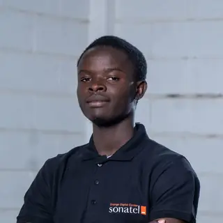

Malang Kiya Cissé
Conception et développement d’applications web et mobiles · Interfaces, logique métier et données

Profil
Développeur web et mobile en formation, avec une pratique de projets couvrant le développement front-end et back-end. Je travaille sur la conception d’interfaces, la mise en place de fonctionnalités, les API et la gestion des données. Je privilégie la compréhension du besoin, une structure de projet claire et des solutions utiles aux utilisateurs.
Environnement technique
Projets réalisés
SunuGox
Civic techPlateforme de signalement et de suivi des problèmes urbains. Le projet permet de transmettre un signalement et d’en suivre le traitement.
FlexPay Sénégal
Application financièreApplication de portefeuille numérique avec gestion des utilisateurs et des rôles, dépôts, transferts, historique des transactions et transfert par QR Code.
Réservation-Salles
Gestion de réservationsApplication de réservation de salles intégrant les règles de disponibilité, la prévention des chevauchements et le suivi des réservations.
Fondé 44
Commerce · PWAApplication mobile-first de présentation des produits, de prise de commandes et de gestion d’une activité de vente alimentaire.
QRCode
Outil webProjet autour de la génération de QR codes pour faciliter l’accès rapide à une information ou à une ressource numérique.